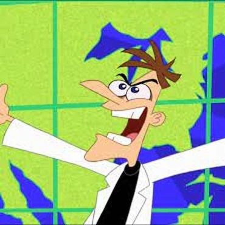

La ciudad
Historia:
La ciudad fue fundada en 2015 por el doctor Doofenshmirtz para que pudiera vivir lejos de su hermano y exesposa, para luego perseguir un objetivo más ambicioso.
Desde su fundación, la ciudad se convirtió en un centro turístico e industrial que flota frente a la costa de Estados Unidos.
Identidad:
La relevancia de la ciudad
La ciudad es reconocida por ser un logro de ingeniería que atrajo a los mejores habitantes en las ciencias y las artes.
Características:
La ciudad se caracteriza principalmente por su estabilidad estructural, a pesar de estar flotando en el mar.
Además, ha desarrollado un enorme instituto científico, industrial y artístico.

¿Sabías que...?
La ciudad de Doofania es la única ciudad flotante del mundo.
Costumbres
Hay dos costumbres principales en la ciudad: la celebración del «Día de la Ciencia» y una tradición llamada «Remembranza del camino».
En el Día de la Ciencia, científicos de dentro y fuera de la ciudad hacen una exposición de sus invenciones.
Quienes más impresionen serán recompensados por su ingenio y esfuerzo.
La tradición de la ciudad consiste en que, cuando un científico presenta una invención en la que ha trabajado, debe invertir una parte significativa de su tiempo en recordar las tecnologías que llevaron al desarrollo de la invención que está presentando.
Datos de la ciudad
- Población
- 250.000 habitantes
- Año de fundación
- 2015
- Clima
- Templado y húmedo
- Gentilicio
- Doofaniano
- Actividad principal
- Investigación y desarrollo tecnológico